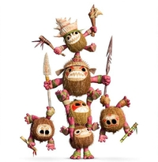

Moana needs to take the heart of Te Fiti back to its original master. To do this, she must go on a perilous voyage and see how far she'll go. Unfortunately she doesn't know the way and there are a bunch of cute but deadly Kakamora in her path.
Given a grid representing the ocean, where each square contains the number of Kakamora present, you are to find a path from the northwest corner to the southeast corner while minimizing the number of Kakamora she encounters during her voyage.
Since Moana is in rush, she only moves east, south, or south-east from one square to another until she reaches the final location. Knowing what parts of the ocean to avoid due to the large amount of Kakamora will help her greatly, so not only report the minimum number of Kakamora she'd encounter, but also the actual path to take.
Do a good job and you can tell Moana: you're welcome.
You will be given a series of NxN grids where each square contains the
population of the Kakamora. The first line will contain the number of
squares in each direction N, followed by the NxN grid itself. You may
assume N is no larger than 100. The end of input will be denoted by a
0 as the value of N.
5
1 5 2 3 6
4 3 2 1 2
3 8 4 2 1
0 5 2 3 4
3 1 4 2 1
0
For each grid, output the minimum number of Kakamora encountered on one line, followed by the path taken on the next (indicate paths by printing the sequence of squares visited as denoted by the Kakamora population).
When re-constructing path backwards, favor horizontal movements first, then vertical, and finally diagonal as this will maximize the number of regions visited and give consistent path results.
12
1 3 2 2 3 1
For each input test case, your solution should have the following targets:
| Time Complexity | O(N^2), where N is the dimension of the grid. |
| Space Complexity | O(N^2), where N is the dimension of the grid. |
Your solution may be below the targets, but it should not exceed them.
To submit your work, follow the same procedure you used for [Reading 00]:
$ cd path/to/cse-30872-su25-assignments # Go to assignments repository
$ git switch master # Make sure we are on master
$ git pull --rebase # Pull any changes from GitHub
$ git checkout -b challenge12 # Create and checkout challenge12 branch
$ $EDITOR challenge12/program.cpp # Edit your code
$ git add challenge12/program.cpp # Stage your changes
$ git commit -m "challenge12: done" # Commit your changes
$ git push -u origin challenge12 # Send changes to GitHub
To check your code, you can use the .scripts/check.py script or curl:
$ .scripts/check.py
Checkig challenge12 program.cpp ...
Result Success
Time 0.02
Score 6.00 / 6.00
$ curl -F source=@challenge12/program.cpp https://dredd.h4x0r.space/code/cse-30872-su25/challenge12
{"result": "Success", "score": 6, "time": 0.032204389572143555, "value": 6, "status": 0}
Once you have committed your work and pushed it to GitHub, remember to create a pull request and assign it to the instructor.